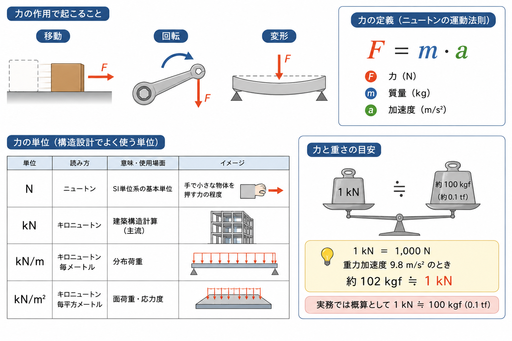
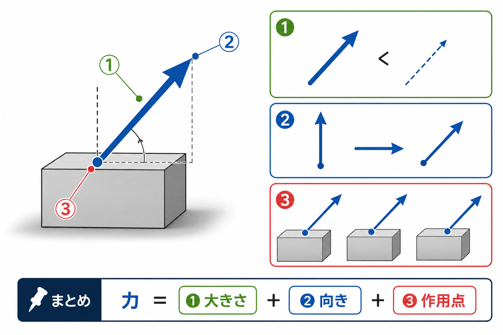
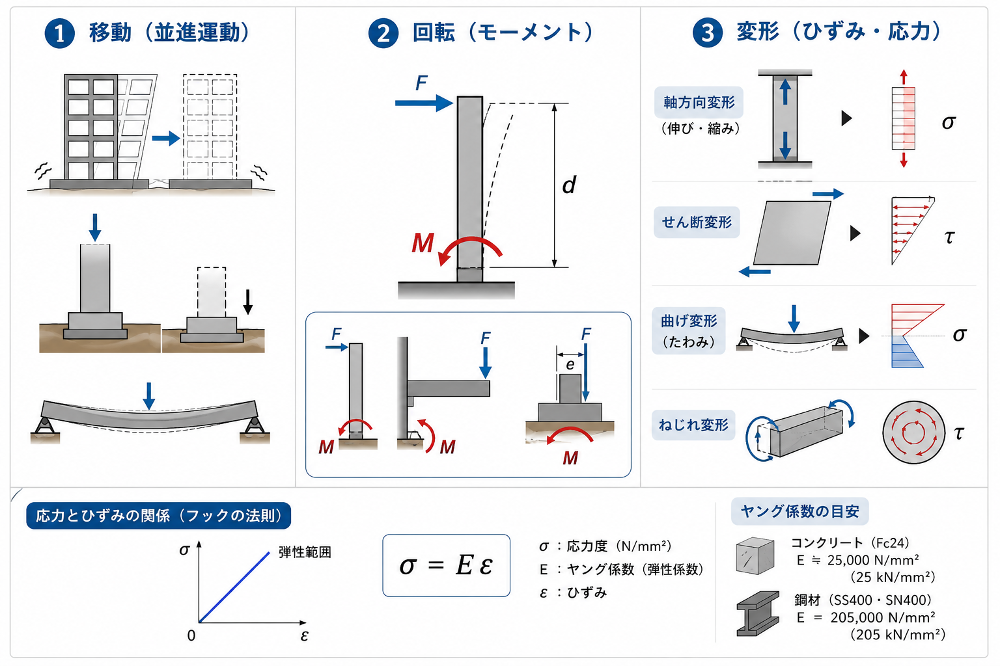
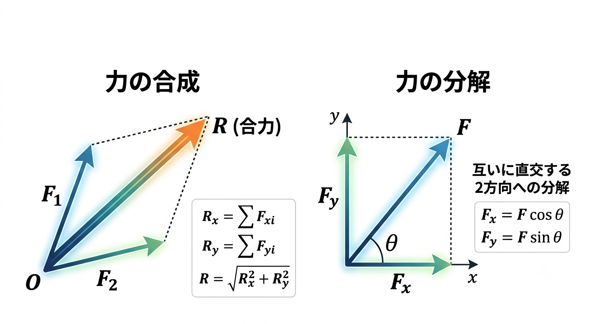
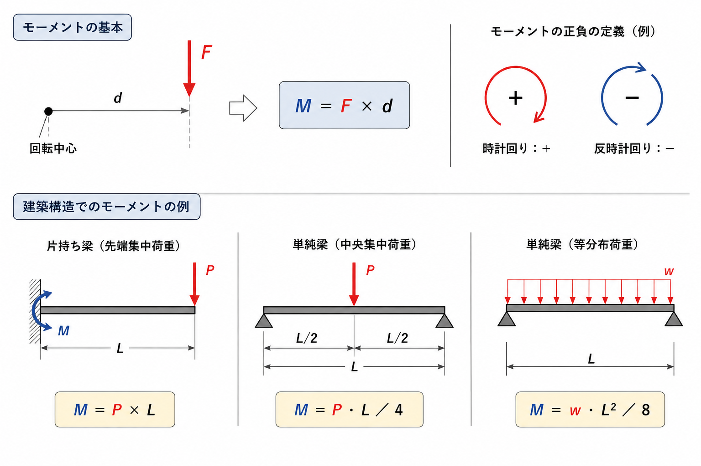
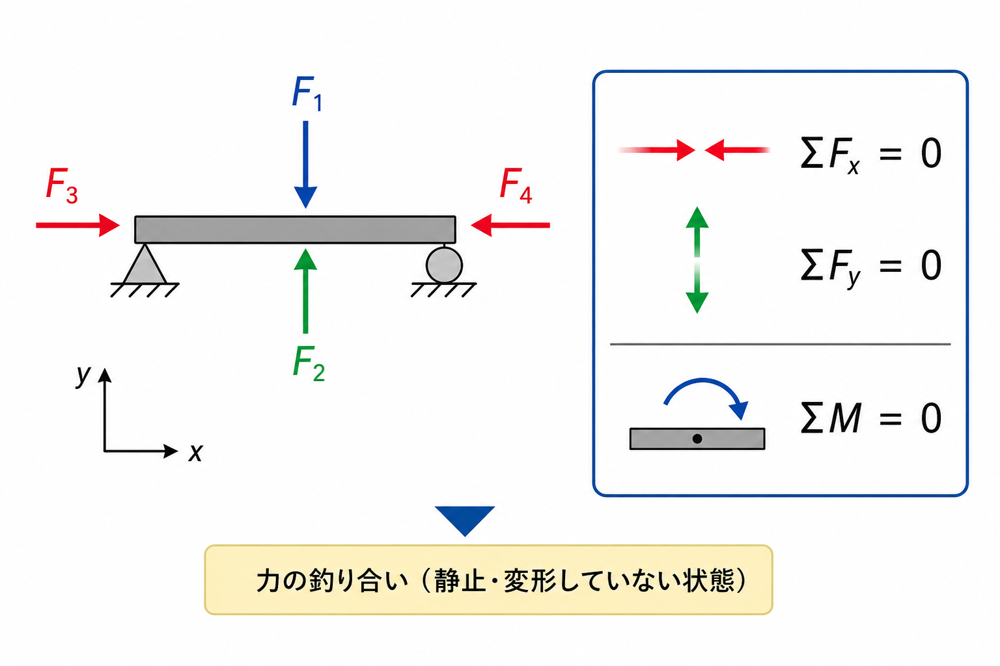

力とは？移動・回転・変形を起こす作用をわかりやすく解説【構造力学の基礎】
「力」とは、物体に移動・回転・変形を起こす作用のことです。私たちの日常にも、重力・風・水圧などさまざまな「力」が存在します。建築・土木の構造設計においても、力の概念はすべての計算の出発点となる、もっとも基礎的な知識です。
この記事では、次の内容をできるだけわかりやすく・丁寧に解説します。
- 力の定義と3要素
- 力がもたらす3つの作用（移動・回転・変形）
- 力のベクトル表現と合成・分解
- モーメントとは何か
- 建築・土木における力の実例
構造力学をこれから学ぶ方、復習したい方にも最適な入門記事です。「移動・回転・変形」という3つの作用を軸に、力の全体像をつかみましょう。
1. 力とは何か？定義と基本概念

力（ちから）とは、物体に移動・回転・変形のいずれか（またはその組み合わせ）を生じさせる作用のことです。物理学では、力はニュートンの運動の法則に基づいて定義されます。
力の単位
構造設計の実務では、次の単位が使われます。
| 単位 | 読み方 | 使用場面 |
|---|---|---|
| N | ニュートン | SI単位系の基本単位 |
| kN | キロニュートン | 建築構造計算（主流） |
| kN/m | キロニュートン毎メートル | 分布荷重（線荷重） |
| kN/m² | キロニュートン毎平方メートル | 面荷重・応力度 |
1 kN ＝ 1,000 N です。重力加速度を 9.8 m/s² とすると、約 102 kgf ≒ 1 kN。実務では概算として 1 kN ≒ 100 kgf（0.1 tf） と覚えておくと便利です。
2. 力の3要素

力を正確に表現するには、次の3つの要素が必要です。この3要素が決まって初めて、力が一意に定まります。
- ① 大きさ（マグニチュード）…力がどれだけ強いか。単位は N または kN。
- ② 向き（方向）…力がどちらの方向に作用しているか。上下・左右・斜めなど、ベクトルの方向成分で表す。
- ③ 作用点（作用位置）…力がどこに作用しているか。同じ大きさ・同じ向きでも、作用点が異なれば力の効果は変わる。
力 ＝ 大きさ ＋ 向き ＋ 作用点。この3つを「力の3要素」と呼びます。
3. 力がもたらす3つの作用

力が物体に作用すると、次の3つの作用が生じます。これが本記事の核心です。
① 移動（並進運動）
力の方向に物体が平行移動する作用です。
- 水平力（地震力・風圧力）による建物の水平移動
- 鉛直荷重による基礎の沈下
- 荷重を受けた梁のたわみ（鉛直方向の移動）
物体の重心に力が作用する場合、回転は生じず純粋な並進移動のみが起きます。
② 回転（モーメント）
力の作用線が物体の重心を通らない場合、または複数の力が組み合わさる場合に、物体が回転しようとする作用が生じます。この回転を起こそうとする力の作用をモーメントと呼びます（詳しくは第6章・「力のモーメント」）。
- 柱の頂部に水平力 → 柱脚に回転（曲げモーメント）が生じる
- 片持ちスラブの先端に荷重 → 根元に曲げモーメントが発生
- 基礎に偏心荷重 → 転倒モーメントの発生
③ 変形（ひずみ・応力）
力が作用すると、物体内部に応力（内力）が生じ、それに伴いひずみ（変形）が発生します。変形の種類は、力の作用方向によって異なります。
| 変形の種類 | 力の作用 | 発生する応力 | 建築での例 |
|---|---|---|---|
| 軸方向変形（伸び・縮み） | 引張力・圧縮力 | 軸応力度（σ） | 柱の圧縮、ブレースの引張 |
| せん断変形 | せん断力 | せん断応力度（τ） | 梁端部のせん断 |
| 曲げ変形（たわみ） | 曲げモーメント | 曲げ応力度（σ） | 梁・スラブのたわみ |
| ねじれ変形 | ねじりモーメント | ねじり応力度 | 偏心荷重を受ける梁 |
応力とひずみの関係（フックの法則）
弾性範囲内では、応力とひずみは比例します（→「応力度とひずみ・ヤング係数」）。
- コンクリート（Fc24）：E ≒ 25,000 N/mm²（25 kN/mm²）
- 鋼材（SS400・SN400）：E ＝ 205,000 N/mm²（205 kN/mm²）
4. 力の表し方（ベクトル）

力は大きさと方向を持つ量（ベクトル量）です。矢印で表現し、矢印の長さが大きさ、矢印の向きが力の方向を示します。
スカラーとベクトルの違い
| 量の種類 | 定義 | 例 |
|---|---|---|
| スカラー量 | 大きさのみを持つ量 | 質量・温度・時間・面積 |
| ベクトル量 | 大きさと方向を持つ量 | 力・変位・速度・加速度 |
力のベクトル表現
2次元（平面）では、力 F を x 成分と y 成分に分けて表します。
5. 力の合成と分解

力の合成
複数の力が一点に作用するとき、それらをまとめて1つの力（合力）に置き換えることができます。平行四辺形の法則を用いるか、x・y 成分ごとに足し合わせます。
R ＝ √( Rx² ＋ Ry² ) R：合力の大きさ Rx・Ry：合力のx・y成分
力の分解
1つの力を、互いに直交する2方向（x・y）の力に分解することを力の分解といいます。斜め荷重の計算や、トラス部材の軸力計算でよく使われます。
6. モーメントとは？（回転を起こす力の作用）

モーメントは「回転を起こそうとする力の作用」であり、構造設計では非常に重要な概念です。
モーメントの正負の定義
一般に、時計回りを正（＋）、反時計回りを負（－）とする場合と、その逆の場合があります。計算書内で統一することが重要です。
建築構造でのモーメントの例
片持ち梁の根元の曲げモーメント：先端に集中荷重 P が作用する長さ L の片持ち梁では、根元の曲げモーメントは次のとおりです。
単純梁の中央の曲げモーメント：スパン L の単純梁の中央に集中荷重 P が作用する場合。
等分布荷重 w（kN/m）が作用する場合。
各種はりの公式は「はりの公式一覧」、図示の方法は「Q図・M図の描き方」も参考にしてください。
7. 力の釣り合いとは？

物体が静止（変形していない）状態にあるとき、物体に作用するすべての力は釣り合っています。これを力の釣り合いといいます。釣り合い条件は、次の3式で表されます（2次元の場合）。
この3条件が、構造力学における静定構造の解法の基本となります。
8. 建築・土木における力の種類
実際の建築・土木構造物には、さまざまな種類の力（荷重）が作用します（→詳しくは「固定荷重・積載荷重の拾い方」「外力（荷重）とは」）。
荷重の分類
| 荷重の種類 | 具体例 | 作用の特徴 |
|---|---|---|
| 固定荷重（G） | 建物自重（コンクリート・鉄骨・仕上げ材等） | 常時・鉛直・不変 |
| 積載荷重（P） | 人・家具・設備機器等 | 常時・鉛直・変動 |
| 積雪荷重（S） | 屋根への積雪 | 季節的・鉛直 |
| 風圧力（W） | 建物外壁面への風の圧力 | 水平・変動 |
| 地震力（E） | 地盤の振動による慣性力 | 水平・動的 |
| 土圧・水圧 | 地下外壁への土・水の圧力 | 水平・常時 |
荷重の作用形式
| 作用形式 | 説明 | 単位 |
|---|---|---|
| 集中荷重 | 一点に作用する力 | kN |
| 分布荷重（線荷重） | 長さ方向に分布する力 | kN/m |
| 面荷重 | 面積に分布する力 | kN/m² |
9. よくある質問
Q1. 力とエネルギーの違いは？
力は「作用そのもの（ベクトル量）」であり、エネルギーは「力が物体を動かした仕事量（スカラー量）」です。
Q2. 内力と外力の違いは？
外力は外部から物体に作用する力（荷重・反力など）、内力は外力によって部材内部に生じる力（軸力・せん断力・曲げモーメントなど）です。構造設計では、外力から内力（応力）を求め、内力が部材の許容値以内に収まるかを確認します。
Q3. 「力の流れ」とは何ですか？
建築構造において「力の流れ」とは、荷重がスラブ → 梁 → 柱 → 基礎 → 地盤へと伝達されていく経路のことです。構造計画の根本は、この力の流れを明確にすることにあります。
Q4. kN と tf（トン力）の換算は？
実務の概算では 1 tf ≒ 10 kN と覚えておくと便利です。
10. まとめ
| 項目 | 内容 |
|---|---|
| 力の定義 | 移動・回転・変形を起こす作用 |
| 力の3要素 | 大きさ・向き・作用点 |
| 移動 | 並進運動。重心への力の作用で純粋に発生 |
| 回転 | モーメント M ＝ F × d で表現 |
| 変形 | 応力・ひずみ。フックの法則（σ ＝ E・ε）で表現 |
| 釣り合い条件 | ΣFx ＝ 0、ΣFy ＝ 0、ΣM ＝ 0 |
力の概念は、構造力学・建築設計・土木設計のすべての基盤です。「移動・回転・変形」という3つの作用と、力の3要素・モーメント・釣り合い条件をしっかり理解することで、構造力学の学習が大きく前進します。